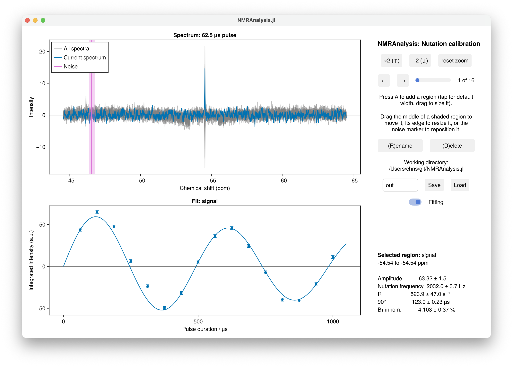

Pulse Calibration
calibration1d analyses a nutation experiment: a series of spectra recorded with increasing pulse duration, from which the B₁ field strength and the 90° pulse length follow. This is how spin-lock powers are calibrated before an R1ρ experiment.

Running the analysis
using NMRAnalysis
results = calibration1d("1")The analysis window opens with a region on the tallest peak. Check that it sits over the signal you are calibrating on, put the noise marker somewhere empty, and press Save.
Durations and modulation
The pulse durations and the modulation are found in the usual order of precedence:
| From an argument | From an annotation | Otherwise | |
|---|---|---|---|
| Durations | durations=[1e-5, 2e-5, …], in seconds | calibration.duration | you are asked, in µs |
| Modulation | phase=:sine or :cosine | calibration.model | you choose from a menu |
A sine modulation is the usual case, where the experiment starts from equilibrium; a cosine modulation applies where it starts from transverse magnetisation.
Pulse programme
An annotated ¹⁹F nutation sequence is available at 19f_calib_nut.cw. Its annotations let analyse recognise the experiment and run this analysis without being told which one to use:
analyse("examples/calibration/1")| Annotation | Meaning |
|---|---|
calibration.channel | Channel being calibrated, e.g. "f1" |
calibration.power | Power level used |
calibration.duration | Pulse durations |
calibration.model | "sine_modulated" or "cosine_modulated" |
What is fitted
A damped sinusoid,
\[I(t) = A \sin(2\pi \nu t) \exp(-Rt),\]
or a cosine in place of the sine, from which the 90° pulse length and the B₁ inhomogeneity follow:
\[t_{90} = \frac{1}{4\nu}, \qquad \text{B}_1\ \text{inhomogeneity} = \frac{R}{2\pi\nu}.\]
| Parameter | Meaning |
|---|---|
A | Amplitude |
nu | Nutation frequency, Hz |
R | Decay rate, s⁻¹ |
pulse90 | 90° pulse length, µs |
inhomogeneity | B₁ inhomogeneity, % |
A B₁ inhomogeneity of 5 to 10% is normal for a standard probe. A much larger value usually means the fit has gone wrong, or the signal is not on resonance.
results = calibration1d("1")
param(results[1], :pulse90) # µs, with uncertaintySetting up R1ρ spin-lock powers
setupR1rhopowers takes a calibration experiment directly and works out the power levels for a set of spin-lock field strengths:
setupR1rhopowers("examples/calibration/1")See the R1ρ tutorial for the whole procedure.